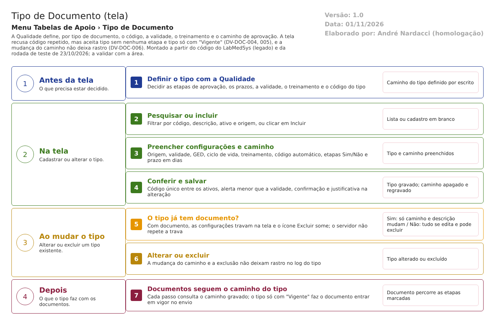

Fluxograma no arquivo 01-tipo-de-documento.fluxo.json, em 4 fases e 7 etapas. Etapas, na mesma ordem do arquivo:
- Etapa 1. Definir o tipo com a Qualidade: decidir o caminho, a validade e o treinamento (Antes da tela).
- Etapa 2. Pesquisar ou incluir o tipo: filtros por código, descrição, ativo e origem, ou Incluir (Na tela).
- Etapa 3. Preencher configurações e caminho: ciclo de vida, treinamento, código automático, etapas e prazos (Na tela).
- Etapa 4. Conferir e salvar: código único entre os ativos, alerta menor que a validade, confirmação e justificativa na alteração (Na tela).
- Etapa 5. O tipo já tem documento? (decisão): com documento, as configurações travam na tela e a exclusão some; sem documento, tudo se edita e o tipo pode ser excluído (Ao mudar o tipo).
- Etapa 6. Alterar ou excluir: a mudança do caminho e a exclusão não deixam rastro no log do tipo (Ao mudar o tipo).
- Etapa 7. Documentos seguem o caminho do tipo: o próximo documento já usa o caminho novo; tipo só com "Vigente" faz o documento entrar em vigor no envio (Depois).
Situações e histórico
Situações
- Ativo = Sim: o tipo é oferecido na inclusão de documentos e nas telas de Modelos e Arquivos (se for GED).
- Ativo = Não (inativo): deixa de ser oferecido; os documentos já criados continuam. Libera o código para novo cadastro (RN-DOC-058).
- Lixeira (excluído): some da lista e das escolhas; o caminho de aprovação é apagado.
O que grava no histórico (log)
- Inclusão do tipo e, na alteração, os campos com nome amigável: Descrição, Ativo (rotulado "Ativo Anexo"), Origem, Treinamento, Validade, Alerta, Setor Responsável e Responsável (Infra/LogConfig/TipoDocumentoLogConfiguration.cs:19-27). A inclusão e a exclusão de anexo entram com a justificativa (Tipo:435-505).
- Teste: depois de mudar o caminho com justificativa, o log do tipo trouxe só "INCLUSÃO DO REGISTRO" (CT-DOC-042, DV-DOC-006).
O que não grava, ou não ficou provado
- A mudança do caminho de aprovação (as linhas são apagadas e recriadas em outra tabela; Tipo:666-684). Confirmado no teste.
- Os campos Código automático, Controle GED e Controle do Ciclo de Vida não têm nome amigável no log do tipo; se aparecem com nome técnico ou não aparecem é A confirmar no teste.
- A exclusão do tipo e a justificativa dela (RN-DOC-T04).
- Quem imprimiu a lista.
Dados
Tabelas do banco
| Tabela | Colunas principais | Chaves e ligações | Fonte |
|---|---|---|---|
TBL_TIPO_DOCUMENTO_CONTROLE_DOC (nome usado pelo código; os scripts do projeto criam TBL_TIPO_DOCUMENTO, sem as colunas CODIGO_AUTOMATICO, SEQUENCIAL, CONTROLA_GED e CONTROLA_VIDA) |
TIPO_DOCUMENTO, DESCRICAO, VALIDADE, ALERTA, TREINAMENTO, ORIGEM, RESPONSAVEL, SETOR_RESPONSAVEL, ID_SETOR_RESPONSAVEL, CODIGO_AUTOMATICO, SEQUENCIAL, CONTROLA_GED, CONTROLA_VIDA, ATIVO, LIXEIRA, datas e usuários | Referenciada por documento, documento externo, anexo | Infra/EntityConfig/TipoDocumentoConfiguration.cs:10-30; DB/Tables/TBL_TIPO_DOCUMENTO.sql |
| TBL_TIPO_DOCUMENTO_SITUACAO (fora dos scripts) | ID_TIPO_DOCUMENTO, ID_SITUACAO, QTD_DIAS, ORDEM | O caminho de aprovação do tipo | Infra/EntityConfig/TipoDocumentoSituacaoConfiguration.cs:10-22 |
| TBL_SITUACAO_DOCUMENTO | ID_SITUACAO_DOCUMENTO, DESCRICAO e, no código, ETAPA, ORDEM, OBRIGATORIO, PRAZO_RESPOSTA (o script do projeto não cria estas quatro) | Fonte das nove linhas do caminho | DB/Tables/TBL_SITUACAO_DOCUMENTO.sql:1-13; DB/dml.sql:1-29; SituacaoDocumentoConfiguration.cs:10-21 |
| TBL_TIPO_DOCUMENTO_CODIGO (fora dos scripts) | Sequencial por tipo e setor | Alimenta o código automático | App/Services/TipoDocumentoCodigoAppService.cs |
| TBL_ANEXO | Anexos do tipo (arquivo, descrição, ativo, chave do arquivo na nuvem) | Liga ao tipo | Tipo:466-482 |
| Histórico (TBL_LOG_ALTERACAO_CONTROLE_DOC e _ITEM) | Campo, valor antigo e novo, justificativa, usuário | Fora dos scripts (00-reconhecimento.md, seção 4) |
Infra/Repositories/RepositoryBase.cs:291-360 |
Leituras e gravações em outros módulos
| Módulo | O que é lido ou gravado | Meio | Fonte |
|---|---|---|---|
| Principal | Área (setor) do usuário logado, para preencher o setor responsável | Chamada ao Principal (GetObterAreaPorUsuario) |
Tipo:182-201 |
| Principal | Funções do perfil do usuário (TABELAAPOIO_TIPODOCUMENTO) |
Serviço de usuário | Tipo:58-67 |
| Dentro do módulo | Documento, Documento Externo, Modelos, Arquivos e Controle de Cópias leem o tipo (caminho, validade, código, GED, ciclo de vida, treinamento) | Banco do módulo | TipoDocumentoAppService.cs; DocController.cs:2203-2221, 2603-2605; DocGestaoController.cs:129-132 |